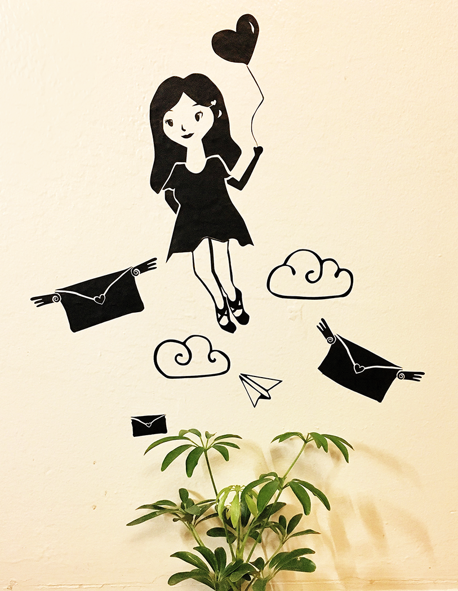
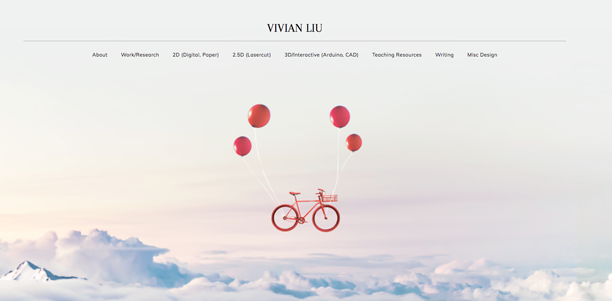

I've also explored other machines in the makerspace such as vinyl cutter. A common motif in my work is clouds, can you tell?
In my first semester in college, I won 2nd place at a web design showcase. Ever since then, I've been redesigning my site every winter, because I have always been a someone into virtual art practice.
The first winter, it took me half a semester. The second winter, it took me 1.5 weeks. This winter, it took me 1.5 days. Yay!
The first winter, it took me half a semester. The second winter, it took me 1.5 weeks. This winter, it took me 1.5 days. Yay!



